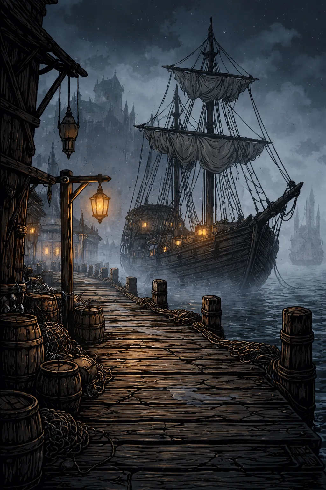
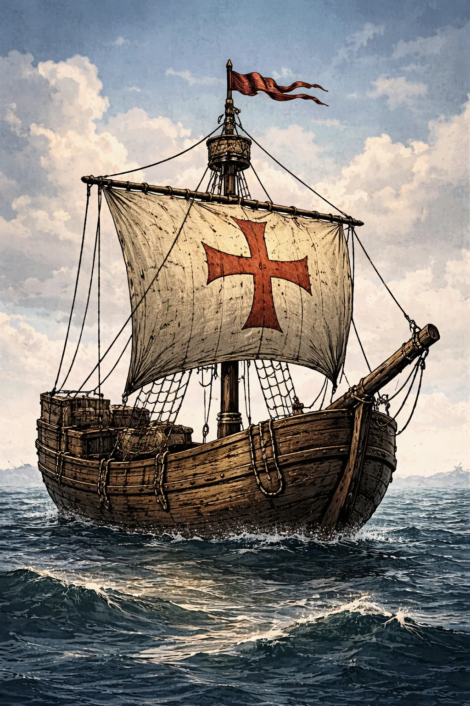
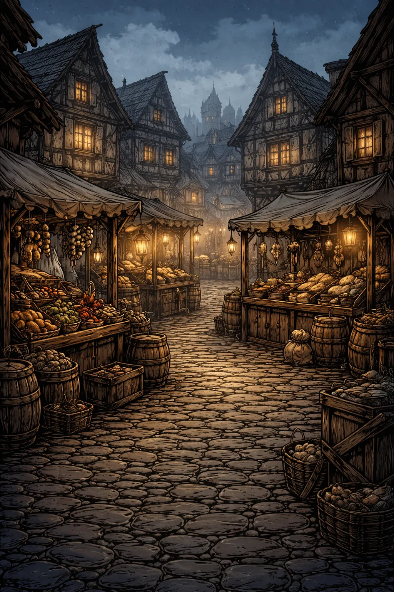
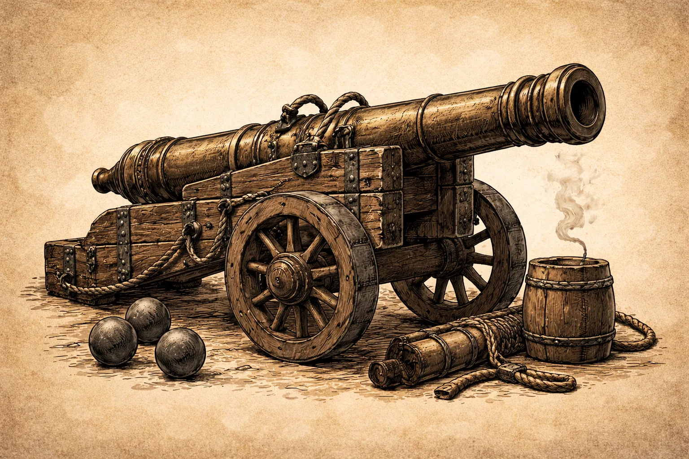

HANSE: ATHERIA EDITION - Spielhandbuch


0) Patchnotes (Stand 2026-02-25)
Patch-ID: P-2026-02-25
Dokustand: 2026-02-25
Save-Version: 2 (Legacy-Saves ohne Weltwirtschaftsdaten bleiben ladefaehig)
Enthaltene Erweiterungen:
- Dynamische Weltwirtschaft: Physische Stadtinventare pro Ware, echte Marktbestaende.
- Produktion: Rezeptbasierte Betriebe je Stadt (Inputs/Outputs, Level-Skalierung, Aktivstatus, Grundverbrauch).
- NPC-Handel: KI-Haendler mit Arbitrage, die Waren zwischen Staedten bewegen und so Preise indirekt veraendern.
- Preislogik erweitert: Zusaetzlicher
Inventory-Faktorfuer Knappheit/Ueberfluss je Stadt und Ware. - Jahrhundertwechsel/Freischaltungen: Neue Waren, Schiffstypen, Titelstufen und Waffenprofile werden automatisch aktiv.
- Auto-Aufwertung im Auto-Modus: Neue Gueter werden automatisch gehandelt; neue Schiffe/Kanonen gemaess aktueller Jahrhundert-Technik genutzt.
- Flottenmodernisierung: Schiffe koennen im Hafen verkauft werden, um auf neue Jahrhundertmodelle umzusteigen.
1) Titelblatt & Basisdaten
| Feld | Inhalt |
|---|---|
| Spielname | Hanse: Atheria Edition |
| Version | 1.0.0 |
| Plattformen | PC (Windows/Linux via Python + pygame), Android (Buildozer APK) |
| Entwickler | HANSE_ATHERIA Projektteam |
| Publisher | ATHERIA Games (Projektlabel) |
| Copyright | Copyright © HANSE_ATHERIA Projekt. Alle Rechte vorbehalten. |
| Altersfreigabe | Aktuell nicht offiziell USK/PEGI eingestuft |
Key Art / Cover-Art
2) Einleitung (Intro / Willkommen)
Willkommen in der Welt der Hanse im 14. Jahrhundert.
Du fuehrst ein Handelshaus, baust eine Flotte auf, verlaedst Waren, befaehrst die Ost- und Nordsee und behauptest dich gegen Sturm, Piraten und wirtschaftliche Turbulenzen.
Genre: Wirtschafts- und Handelssimulation mit Flottenmanagement
Kernziel: Vermoegen aufbauen, Missionen abschliessen, Dynastie sichern
Spielerrolle: Leiter eines hanseatischen Handelshauses
3) Installation & Systemanforderungen
PC - Mindestanforderungen
- Betriebssystem: Windows 10/11 oder aktuelles Linux
- CPU: 2 Kerne, ca. 2.0 GHz
- RAM: 4 GB
- GPU: OpenGL-faehige Grafikeinheit
- Speicherplatz: ca. 2 GB inkl. Python/Abhaengigkeiten
- Runtime: Python 3.11+ empfohlen
PC - Empfohlene Anforderungen
- CPU: 4 Kerne, 2.5+ GHz
- RAM: 8 GB
- GPU: Dedizierte oder moderne iGPU
- SSD-Speicher empfohlen
Android (APK)
- Android 5.0+ (API 21)
- ARMv7 oder ARM64
- 2 GB RAM empfohlen
Installationsschritte (PC)
python -m venv .venv
# Windows:
.venv\Scripts\activate
# Linux/macOS:
# source .venv/bin/activate
pip install --upgrade pip
pip install -r requirements.txt
python HP_Game/main_pygame.py
Installationsschritte (Android Build)
Siehe Build-Anleitung in HP_Android/README.md.
Troubleshooting
ModuleNotFoundError: pygame
Loesung:pip install -r HP_Game/requirements-pygame.txt- Schwarzer Bildschirm / Startproblem auf Android
Loesung: APK fuer passende Architektur bauen (arm64-v8a,armeabi-v7a) - ATHERIA-Runtime nicht gefunden
Loesung: Spiel laeuft im Fallback-Modell weiter; optionalHP_GAME_ATHERIA_ROOTsetzen
4) Steuerung (Controls)
Tastatur (global)
| Aktion | Taste |
|---|---|
| Menues schliessen / Zurueck | ESC (Android: Back-Key) |
| Menge erhoehen | + / = / Numpad + |
| Menge verringern | - / Numpad - |
| Slot speichern | F5 |
| Slot laden | F9 |
Texteingabe
| Aktion | Taste |
|---|---|
| Bestaetigen (Setup / Name / Cheat) | Enter |
| Zeichen loeschen | Backspace |
| Cheat-Konsole oeffnen | | |
| Cheat-Code | HANSE |
Maus / Touch
| Aktion | Eingabe |
|---|---|
| Buttons / Listen auswaehlen | Linksklick / Touch-Tap |
| Scroll in Flottenliste | Mausrad / Touch-Drag im Flottenpanel / Pfeile ^ v |
| Warentransfer im Lademenue | Drag auf Slider |
Android-Spezifika
- On-Screen-Tastatur wird automatisch bei aktiver Texteingabe geoeffnet.
- Ohne aktive Tastatur nutzt die Spielansicht den verfuegbaren Bildschirm wieder voll aus.
- Flottenliste ist fuer Touch-Drag optimiert; alternativ stehen Scroll-Pfeile im Flottenkopf bereit.
- Bei fehlendem externem ATHERIA-Runtime-Aufruf wird auf Android automatisch ATHERIA mobil statt Fallback-Modell genutzt.
- Menue-Button Beenden beendet die App sauber per
SystemExit.
5) Spielmechaniken (Core Systems)

5.1 Zeitmodell und Tick-Reihenfolge
Das Spiel arbeitet im Monatsrhythmus. Ein Monatswechsel ist nicht nur ein Kalenderupdate, sondern ein kompletter Simulationsschritt:
- Neuer Seezustand und ATHERIA-Refresh fuer den Monat
- Weltwirtschafts-Tick: Produktion in allen Staedten (Betriebe + Grundverbrauch)
- NPC-Haendler-Tick: Arbitrage-Kaeufe/Reisen/Verkaeufe zwischen Staedten
- Spielerphase (Handel/Flotte/Menues)
- Laufende Kosten, Finanzlogik, Missions-/Titel-Update und Monatsinkrement
Dadurch entsteht ein klarer Spielpuls: Planen - Ausfuehren - Risiko - Auswertung.
5.1.1 Produktionssystem und Stadtinventare
Jede Stadt besitzt eine eigene Weltwirtschaft mit physischem Inventory pro Ware, Produktionsbetrieben (mit Level und Aktivstatus) sowie optionaler Stadtkasse.
Produktionslogik pro Monat:
- Inputs je aktivem Gebaeude pruefen
- Bei ausreichenden Inputs: Verbrauch + Output-Produktion
- Inputs/Outputs skalieren linear mit dem Gebaeude-Level
- Bei fehlenden Inputs pausiert das Gebaeude in diesem Monat
Ergaenzend gibt es einen kleinen Grundverbrauch fuer Basiswaren (Getreide, Salz, Hering), damit Maerkte dauerhaft in Bewegung bleiben. Startbetriebe sind z. B. Brauerei in Luebeck (inkl. Bier), Holzfaeller in Bergen und Salzminen in Riga/Novgorod.
5.2 Markt- und Preisbildung
Die Preise werden pro Stadt, Ware und Monat dynamisch berechnet. Die Kernformel lautet:
Preis = Basispreis * Stadt-Bias * See-Faktor * (1 + Drift) * Globales Preisniveau * Stadt-Faktor * Waren-Faktor * Inventory-Faktor
Basispreis: statischer Grundwert pro WareStadt-Bias: strukturelles StadtprofilSee-Faktor: aktueller Zustand vonstille Seebistobende SeeDrift: Zufall im Bereich der Waren-VolatilitaetGlobales Preisniveau,Stadt-Faktor,Waren-Faktor: Makroeinfluss aus ATHERIAInventory-Faktor: lokaler Knappheits-/Ueberflussfaktor aus dem realen Stadtbestand- Untergrenze: Ein Preis faellt nie unter 6 Mark
Die Stadtbestaende sind physisch: Produktion, NPC-Handel und Spielerhandel veraendern denselben Warenpool.
5.3 Lager-, Verlade- und Preisbindungs-System
Das Handelshaus besitzt stadtbezogene Lager. Schiffe sind davon getrennt:
- Markt-Kauf geht zuerst immer ins Stadtlager
- Verkauf erfolgt aus dem Stadtlager
- Verladen verschiebt Mengen aus dem Lager in den Schiffsraum
- Beim Kauf sinkt der physische Stadtmarktbestand, beim Verkauf steigt er
Wichtiger Spezialfall: Preisbindung bei Reisebeginn
Wenn ein Schiff mit Ladung auslaeuft, werden Zielortpreise je Ware als gebundene Lots gespeichert.
- Bei Ankunft und Entladen bleibt diese Bindung erhalten
- Beim Verkauf werden zuerst gebundene Lots verbraucht, danach aktueller Spot-Marktpreis
Das erlaubt strategisches Hedging gegen spaetere Marktschwankungen.
5.4 Reisen, ETA und Flottenzustand
- Jedes Schiff reist separat (
is_at_sea,destination,travel_turns_left) - Reisezeit in Monaten basiert auf Distanz zwischen Staedten
- Reisekosten wachsen mit Distanz
- Der aktive Status zeigt Ort, ETA und letzte Ereignismeldung
Eine Flotte kann parallel im Hafen handeln/reparieren und auf See in unterschiedlichen Zielkorridoren unterwegs sein.
5.5 Seerisiko, Kampf und Schadensmodell
Sturm- und Kaperlogik sind seezustandsabhaengig.
- Sturmchance steigt mit rauer See
- Sturmschaden trifft Rumpf und Takelage separat
- Piratenchance wird durch Kanonen reduziert
Piratenformel:
Chance_verlust = Risiko_See / (1 + Kanonen * 0.5)
Effekte eines Angriffs: Warenverlust, Reputationsverlust und Eventlog in Chronik/Schiffsstatus.
5.6 Schiffbau, Wartung und Bewaffnung

Verfuegbare Schiffstypen:
- Grosse Kogge: fruehes Ausbau-Schiff
- Holk: mittleres Transportprofil
- Kraier: hohes Endgame-Laderaumprofil
Weitere Regeln:
- Schiffe koennen individuell benannt werden
- Reparaturen erfolgen prozentual (Rumpf/Takelage)
- Kanonen sind stueckweise kaufbar und beeinflussen Risiko direkt
5.7 Finanzsystem, Schulden und Fortschritt
Monatliche Kosten:
- Heuer skaliert mit Flottenkapazitaet und Wirtschaftslage
- Schulden wachsen ueber monatlich abgeleiteten Zins
- Automatische Tilgung greift bei guter Liquiditaet
Kritische Schwelle:
- Hohe Schulden koennen zu Schuldturm-Runden fuehren
- Im Schuldturm sind zentrale Aktionen blockiert
Progressionsanker:
- Netto-Wert (Liquiditaet + Waren + Flotte - Schulden + Rufanteil)
- Titelaufstieg bis
Senator/Senatorin
5.8 ATHERIA-Makrosystem
ATHERIA beeinflusst den Markt als Metaebene:
global_growth(Wachstum)global_price_level(Preisniveau)resource_scarcity(Knappheit)- zusaetzliche Stadt- und Warenfaktoren
Runtime-Verhalten:
- PC/Notebook: Es wird zuerst ein Live-Aufruf gegen die ATHERIA-Runtime versucht.
- Android: Falls kein externer Runtime-Aufruf verfuegbar ist, nutzt das Spiel automatisch ein eingebettetes ATHERIA mobil-Profil.
- Ohne gueltige ATHERIA-Daten nutzt die Simulation weiterhin ein robustes Fallback-Modell.
5.9 Missionen und Endgame-Anreize
Die Langzeitziele verknuepfen Handel, Flotte, Makrooekonomie und Dynastie:
- Hanse-Privileg: Lieferauftrag mit Frist in Knappheitsphasen; Reward: Stadtbonus
- Architekt der Synergie: Flottenkomposition + Zustand; Reward: Heuer-Reduktion
- Atheria-Resonanz: Netto-Wert-Skalierung in Rezession; Reward: Prestige/Meilenstein
- Familiendynastie: Familien- und Kapitalziel; Reward: Erbfortfuehrung statt hartem Reset
5.10 Auto-Modus (Atheria-Autopilot)
Der Auto-Button uebergibt die Kontrolle an Atheria:
- automatischer Handel (Einkauf, Verkauf, Verladen)
- automatische Routenwahl mit Zielpreis-/Margenlogik
- Schiffbau, Reparaturen und Kanonen-Upgrades
- Monatsfortschritt ohne manuellen Eingriff
- Mit Jahrhundertwechseln nutzt der Auto-Modus automatisch neue Handelsgueter, neue Schiffstypen und neue Waffentechnologien
- Kanonenkaeufe orientieren sich dynamisch am aktiven Waffenprofil des aktuellen Jahrhunderts (Kosten/Wirkung)
Der Lauf endet automatisch bei:
- Meldung
Zeitlimit erreicht. Lade einen Slot oder starte neu. - Verlustbedingung ohne fortsetzbare Ressourcen
5.11 Jahrhundertwechsel, Freischaltungen und automatische Aufwertung
Mit jedem neuen Jahrhundert erweitert sich die Spielwelt automatisch:
- neue Waren werden freigeschaltet und in Markt, Lager, Produktion und Preisbildung integriert
- neue Schiffstypen werden in der Werft verfuegbar
- neue Titelstufen werden aktiv
- das Waffenprofil (Kanonenname, Kosten, Wirkung, Limits) steigt auf die jeweilige Technikstufe
Automatisches Verhalten:
- Der Auto-Modus handelt neue Waren ohne Extra-Konfiguration, sobald sie verfuegbar sind.
- Beim Schiffbau greift er auf das aktuell freigeschaltete Werftangebot zu.
- Bei Wartung/Aufruestung kauft er Kanonen auf Basis der aktiven Jahrhundert-Technik.
Manuelles Ersetzen alter Schiffe:
- Alte Schiffe koennen im Hafen verkauft werden (nicht auf See, nicht beladen, letztes Schiff ist gesperrt).
- So lassen sich Flotten gezielt gegen neue Jahrhundertmodelle austauschen.
6) UI-Erklaerung (Interface Guide)
Die Hauptoberflaeche besteht aus vier Kernbereichen:
- Top-Statusleiste
ANNO/Monat, Seezustand, Spielerwerte, aktives Schiff, ATHERIA-Kennzahlen. - Marktpanel (links)
Warenliste mit Preis, Lagerbestand und Zielpreisvorschau. - Flottenpanel (mitte)
Alle Schiffe, Standort, Ladung, Zustand, Kanonen; Scroll per Touch-Drag, Mausrad oder^/v. - Aktionspanel (rechts)
Kaufen/Verkaufen, Menge, Ladung, Schiffbau, Editor, Reparaturen, Monatswechsel,Auto, Save/Load.
Zusatzfenster:
- Stadtpreise: Preise jeder Stadt im aktuellen Monat
- Missionen: Fortschritt aller Langzeitziele
- Schiffsladung: Transfer Lager <-> Schiff + Reiseziel
- Schiff-Editor: Name + Kanonenkauf
7) Charaktere / Fraktionen
Die Spielwelt arbeitet weniger mit statischen Quest-NPCs und mehr mit systemischen Fraktionen, die dauerhaft auf deine Entscheidungen reagieren.
7.1 Das eigene Handelshaus (Spielerfraktion)
Rolle:
- Oekonomischer Kernakteur mit Flotte, Lager, Ruf, Schulden und Dynastie
Mechanischer Einfluss:
- Trifft alle Handels- und Reiseentscheidungen
- Definiert Risikoappetit (hohe Margen vs. sichere Routen)
- Formt den Langzeitverlauf ueber Missionen und Titel
Strategische Bedeutung: Liquiditaet, Ruf und Schiffszustand sind die drei kritischen Stabilitaetsachsen.
7.2 Hanse-Staedte und Stadtraete
Rolle:
- Regionale Machtzentren mit eigenen Marktprofilen und Versorgungsinteressen
Mechanischer Einfluss:
- Stadt-Bias praegt Preise je Ware
- Missionen wie das Hanse-Privileg entstehen aus lokaler Knappheit
- Stadtlager erzwingen ortsgebundenes Logistikdenken
Strategische Bedeutung: Jede Stadt ist ein eigener Profit- und Risiko-Knoten.
7.3 Hafenmeister, Werften und Versorgungskontore
Rolle:
- Maritime Infrastrukturfraktion fuer Instandhaltung und Flottenwachstum
Mechanischer Einfluss:
- Schiffskauf, Reparatur und Kanonenaufruestung nur im Hafen
- Beschraenkt durch Liquiditaet und Standort des jeweiligen Schiffs
Strategische Bedeutung: Werften bestimmen die Skalierungsgeschwindigkeit.
7.4 Kaperverbaende und Piratenkartelle
Rolle:
- Gegenspieler auf See, die Handelsrouten destabilisieren
Mechanischer Einfluss:
- Warenverluste auf Reisen
- Reputationsschaden bei erfolgreichen Kaperungen
- Direkte Kopplung an Seezustand und Bewaffnung
Strategische Bedeutung: Erzwingen Sicherheitsinvestitionen und Risikostreuung.
7.5 Die ATHERIA-Wirtschaftskraefte
Rolle:
- Uebergeordnete Makrofraktion, die Konjunktur und Knappheit treibt
Mechanischer Einfluss:
- Veraendert Margen, Kaufkraft, Kosten und Risiko indirekt in jedem Monat
- Triggert bestimmte Missionsfenster (z. B. Rezessionsziele)
Strategische Bedeutung: Erfolgreiche Spieler spielen gegen den Zyklus, nicht gegen Einzelpreise.
7.6 Familie und Dynastie
Rolle:
- Soziale Kontinuitaetsfraktion des Handelshauses
Mechanischer Einfluss:
- Lebensereignisse (Ehe, Kinder, Tod)
- Dynastie-Mission kann den Spielabbruch in einen Nachfolge-Start ueberfuehren
Strategische Bedeutung: Verbindet Midgame-Wohlstand mit Endgame-Sicherheit.
8) Spielmodi
- Pygame Edition: Grafischer Einzelspieler mit Vollfunktion.
- CLI Edition: Konsolenversion mit 1-6 Spielern (lokale Runden).
- Save/Load: 6 Save-Slots mit Zeitstempel und Kurzzusammenfassung.
Siegbedingung im klassischen Sinn ist offen gestaltet:
Ziel ist der nachhaltige Aufstieg (Vermoegen, Titel, Flotte, Missionen, Dynastie).
9) Tipps & Strategien
- Kaufe frueh guenstige Grundwaren, verteile Risiken auf mehrere Schiffe.
- Halte immer Reparaturbudget bereit; Null-Rumpf bedeutet Schiffsverlust.
- Kanonen lohnen sich auf stark frequentierten Routen mit wertvoller Ladung.
- Nutze Stadtpreise und Zielpreisvorschau vor jeder Reise.
- Spiele Missionen aktiv an: Rabatt und Heuerbonus skalieren stark im Mid-/Late-Game.
- Ueberziehe den Kredit nicht dauerhaft, Schuldturm blockiert kritische Aktionen.
10) Glossar
- ANNO: Jahres-/Monatsanzeige des Spielfortschritts.
- Ladung: Aktuelle Warenmenge im Schiff.
- Takelage: Zustand von Mast/Segel (beeinflusst Seetauglichkeit).
- Kaperangriff: Piratenereignis mit Warenverlust.
- Knappheit: ATHERIA-Indikator fuer Ressourcenengpaesse.
- Netto-Wert: Geld + Warenwert + Flottenwert - Schulden + Rufanteil.
- Heuer: Laufende monatliche Flotten-/Crew-Kosten.
11) Rechtliches
- Dieses Handbuch und das Spielmaterial sind urheberrechtlich geschuetzt.
- Marken- und Namensrechte verbleiben bei den jeweiligen Rechteinhabern.
- Drittanbieter-Komponenten (u. a. Python, pygame/SDL, numpy, torch) unterliegen ihren jeweiligen Lizenzen.
- Lizenzdatei des Projekts:
LICENSEim Repository-Stamm.
Anhang: Bildverzeichnis (eingesetzte Assets)
images/bg_main.webpimages/bg_setup.webpimages/bg_market.webpimages/bg_sea.webpimages/bg_sea_wild.webpimages/ship_kogge.webpimages/icon_cannon.webpimages/panel_stripe.webpimages/paper_texture_chronik.webpimages/paper_texture_transfer.webp